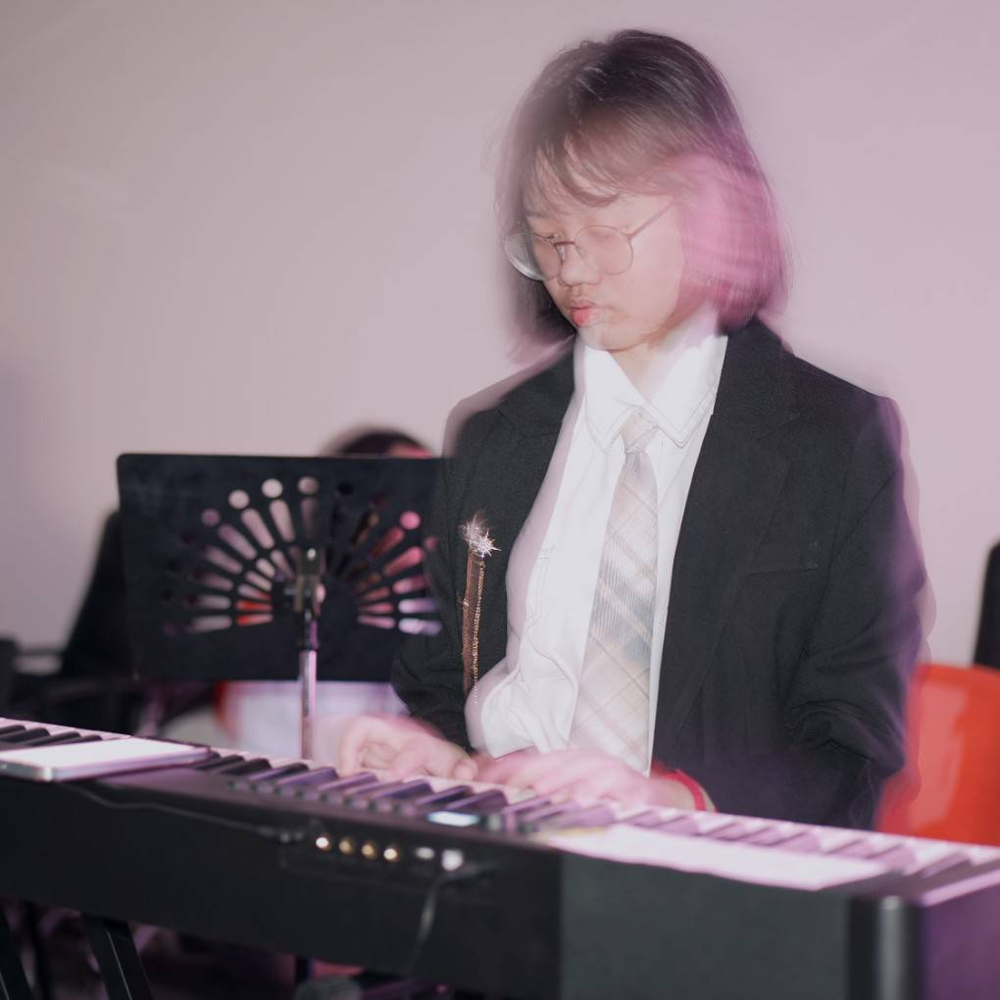
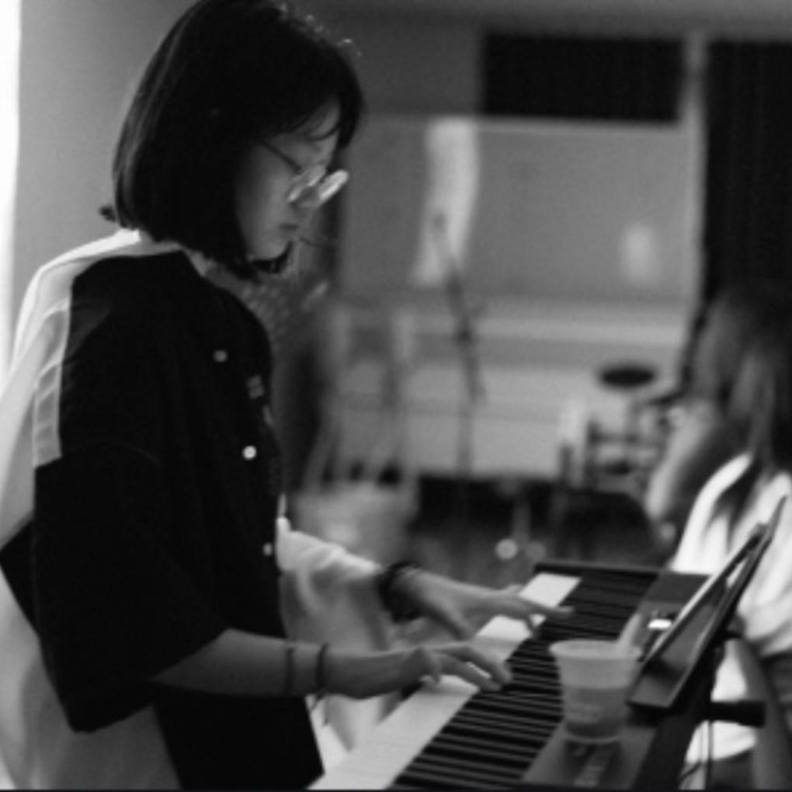
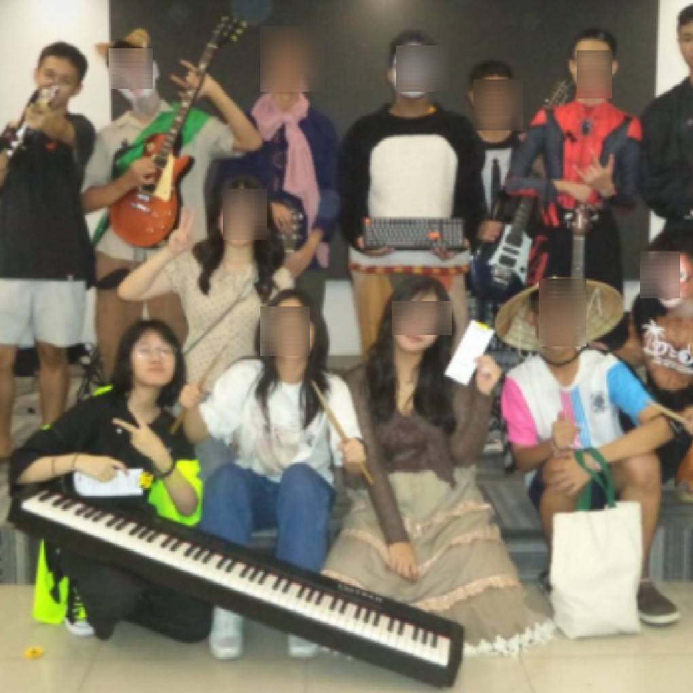
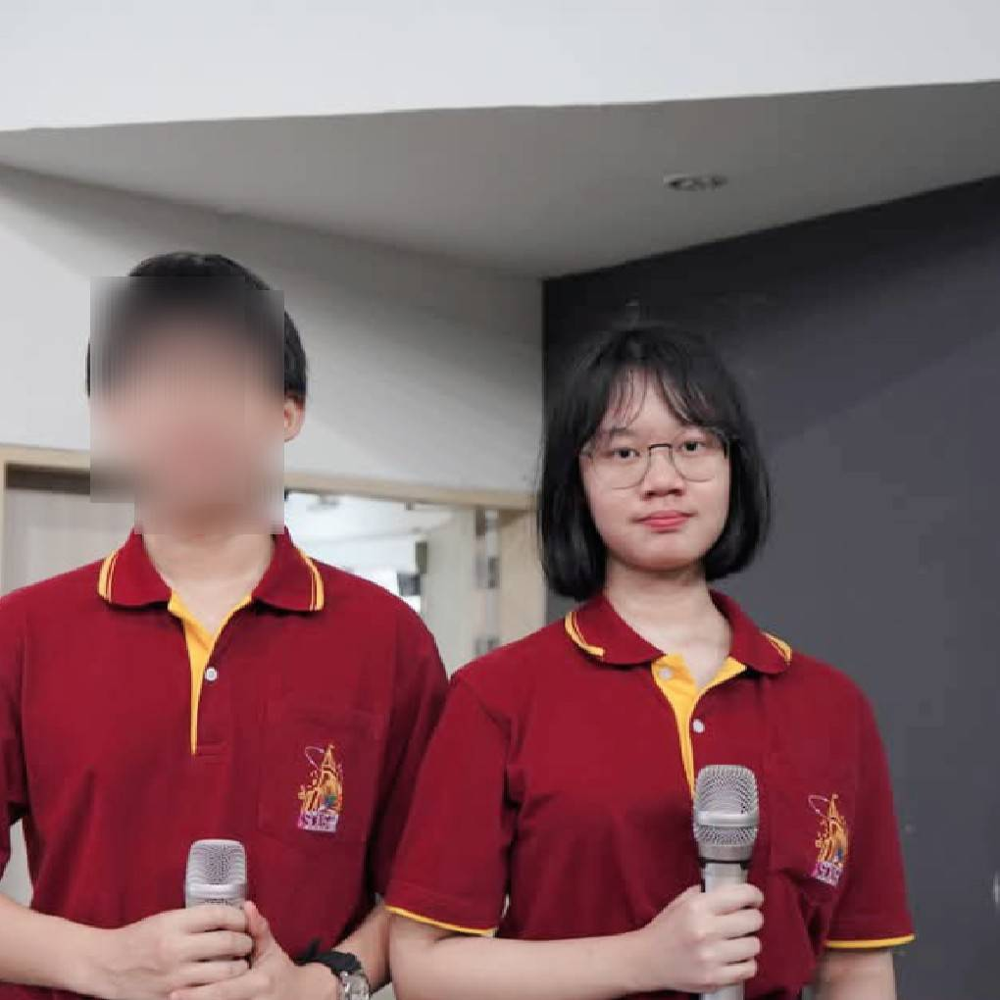
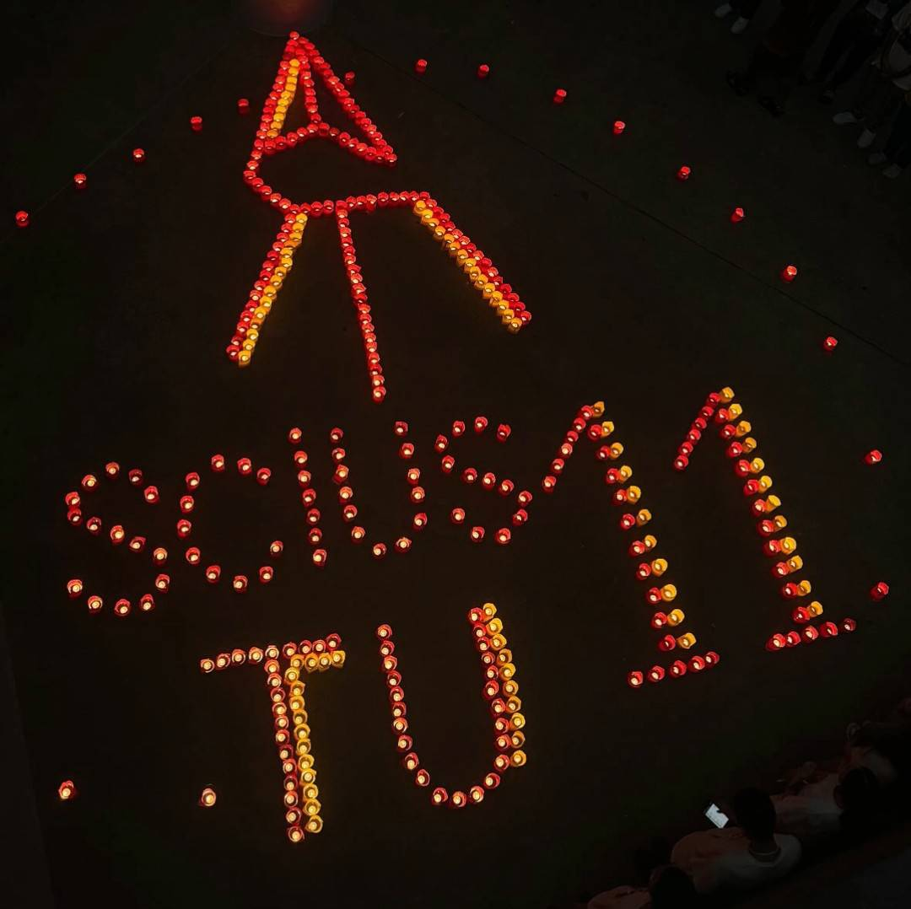
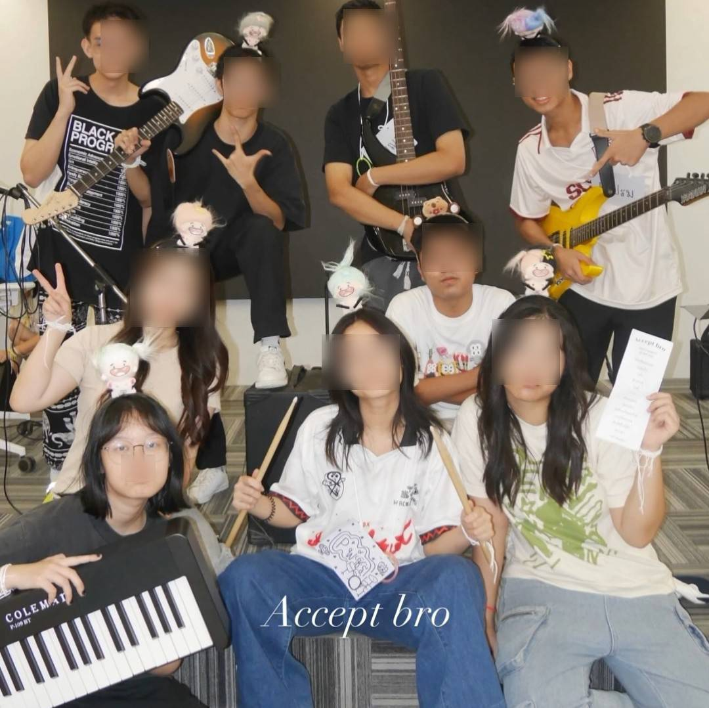
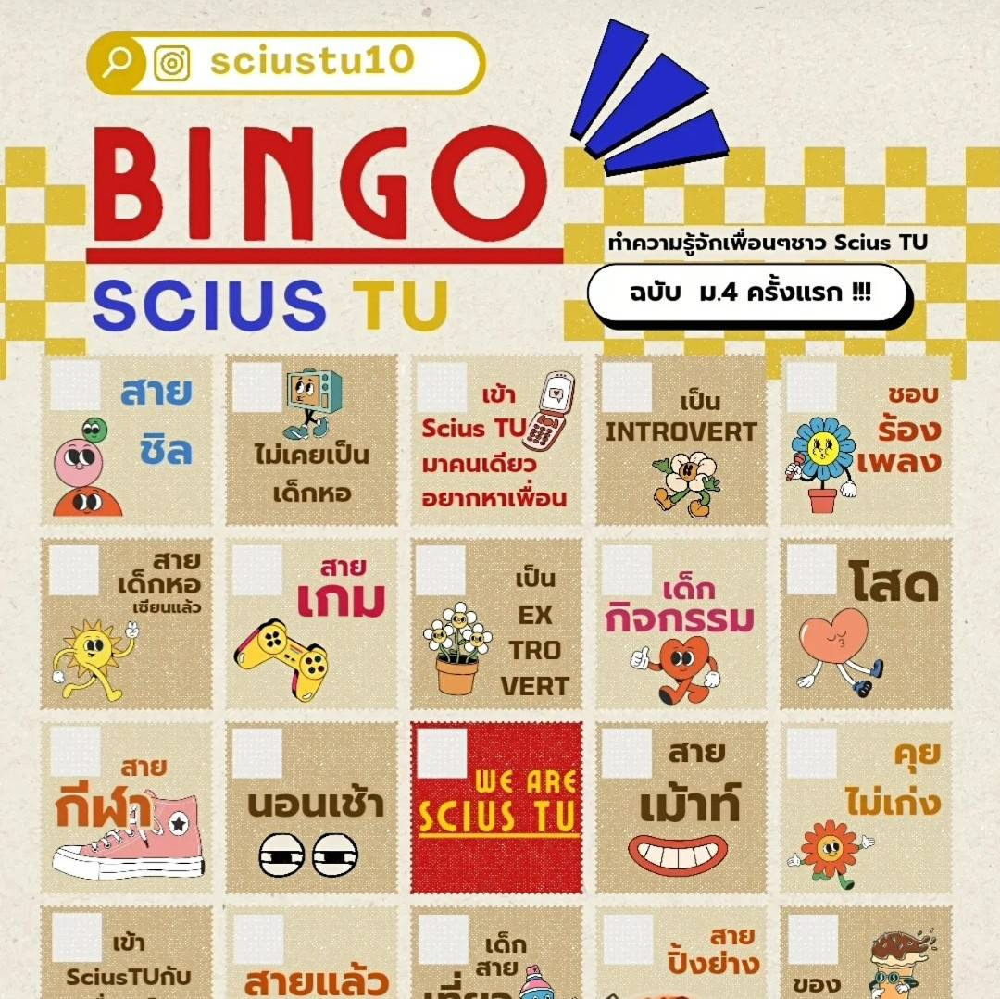

Activity
เป็นเด็กกิจกรรมแบบตะโกน ประสบการณ์ในมัธยมปลายที่ผ่านมาในแต่ละงานก็ทั้งเหนื่อยและสนุกมาก ๆ แต่ยินดีกับทุกคนที่ทำงานด้วยกันทั้งอดีต ปัจจุบัน และอนาคตนะ เต็มที่! สามารถเลื่อนดูภาพเด็กกิจกรรมคนนี้ตะลอนทำโน่นทำนี่ได้เลย55
Musician



รับบทเป็นมือคีย์บอร์ด ในหลาย ๆ งานที่โครงการจัดเช่น งานรับน้อง ปาร์ตี้ ปัจฉิมต่าง ๆ สนุกดี ชอบความรู้สึกที่อยู่บนเวที แต่วางมือแล้วดีกว่า ขอลงไปโดดมั่ง55 ในอนาคตเองมหาลัยถ้ามีโอกาสก็ยังอยากเล่นดนตรีกับวง
Orientation event




กิจกรรมรับน้องใหม่ ทำเพื่อรับน้อง ๆ ม.4 รุ่นที่ 11 ทั้ง 60 คนตอนเราเป็นเด็ก ม.5 เป็นงานที่ทำทั้งรุ่นและสเกลใหญ่มาก ๆ ตั้งแต่งานประฐมนิเทศในหอประชุม กิจกรรมสันทนาการ กิจกรรมฐาน พร็อบตกแต่งสถานที่ พิธีเทียน After party concert คอนเท้นต์ในโซเชียล บริหารงานในรุ่น เรียกว่าตำแหน่งงานเราได้แตะทุกงานไม่มากก็น้อย55 งานใหญ่ที่สุด เหนื่อยที่สุดในการจัดกิจกรรมมาเลย ภูมิใจในรุ่นสิบทุกคนที่ทำงานนี้ออกมาให้เด็กๆได้